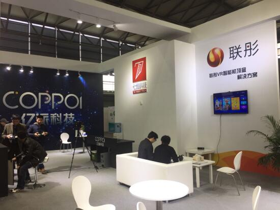

对于许多消费者而言，对VR的探索接触是一件新奇又有些距离的尴尬情境，目前市场上VR体验场景越来越多，比如商场蛋椅、各类ToB展会的各种VR设备越来越多，但消费者想要拥有一个优质家庭体验的VR还是有些困难，因为目前市场上的优质头显类产品动辄数千元，而且还可能需要高规格配置的PC支持，这也是VR目前局限在B端发展而难以在C端家庭普及的最大障碍。这个现象不但可能使VR发展速度变慢，更使许多消费者望而却步。
今年12月，第一次在中国举办的NAB SHOW(美国广播电视展)里，国内顶尖的VR视频一站式解决方案供应商七维科技、联彤、亿派达成三方战略合作，借助三方合作实现能力和资源互补，深耕广电系统，打破上述VR发展瓶颈，联手发展以广电专用TVOS+VR智能机顶盒为出发点，整合VR内容制作、传输分发到终端头显的解决方案，推进VR落地家庭体验，将优质的VR视频内容通过VR智能机顶盒传输到数亿用户家中，也为广电原有内容资源、用户规模、传输效果等特色找到一个广阔的出海口，共同打造出独具特色的广电系VR生态圈和产业链。
市场如果有了海量的优质VR内容资源、有了高整合技术的拍摄及制作技术、有了合适的家庭智能终端以及具推广性的VR头显设备，谁说VR不能走入寻常百姓家? 谁又能拒绝VR产业与广电联手打造家庭娱乐中心的幸福未来?
三家公司及背景及实力如何?以下我们可以简单进行了解。
七维科技：
公司在2014年开始投入VR产业，为国内主要面向B端客户的VR技术和实时CG技术服务公司，公司视频解决方案曾应用于央视春晚主持人与虚拟动画形象阳阳进行互动对话效果等。七维科技启动VR发展战略后投入在全景360度、立体180度、深度计算、面部识别、影视预览方面等技术发展已达产业领先水平，这些底层技术的积累致使七维科技迅速成为国内领先的VR及技术公司。
公司2016年3月推出vipano VR视频解决方案，更覆盖全景拍摄、实时缝合、实时渲染、云端分发的完整的VR视频制播流程。解决方案以vipano Studio为核心，研发出消费级、准专业级、专业级等不同级别的全景相机硬件适配方案，合成后的视频经过编转码之后由云端分发给用户观看。目前该解决方案可广泛应用在VR直播，包括综艺、颁奖礼、发布会、赛事、演唱会、新闻直播等，为广电商用环境提供一个最佳解决方案。
七维科技公司一方面提供广电虚拟演播室、虚拟植入、屏幕交互等多种组合方案外，另一方面也可以为搭配广电产业链的影视制作提供技术服务，提供广电系VR的内容整体制作环境。
联彤智能VR平台：
联彤公司成立于2012年，是一家具有中国自主知识产权操作系统的高科技创新型企业。在过去的几年中，联彤以自身技术优势，发展成为全国最大规模商用的TVOS软件平台供应商，公司的智能操作系统进入成千上万的家庭为家庭娱乐整合了云平台、智能商城、会员平台、支付平台并已占据智能家庭的主要位置。
而根据公司战略思维，联彤2015年开始以广电需求为出发，发展以TVOS +VR的解决方案。联彤解决方案不但整合广电总局要求的TVOS架构及VR功能，而且可在对接广电头端应用后直接上线运营。联彤的广电系VR方案完全以智能机顶盒作为家庭核心出发，其中使用了高性能兆芯2000芯片，可将广电的VR内容实时通过智能机顶盒解码推送到VR头显进行显示，方案具有VR各类应用功能的兼荣性，使用户获得沉浸式VR体验，也协助广电运营商在客厅娱乐大战中，抢得先机亮点应用，给用户崭新体验。
联彤方案支持广电实时直播点播节目观看，并可以通过智能机顶盒将视频缓存到本地，从而大量减少VR大码流带来的网络并发压力，此外方案也将对于不同VR终端的头显进行各类调适，提供不同位阶的VR终端都能有较舒适性的体验感受。
未来联彤将深入发展广电家庭VR中心，推出整合TVOS的VR中间件系统、 EPG系统、VR 应用商店与云平台等产品，联彤将与广电运营商联合订制用户使用界面，让用户操作体验耳目一新，也共同扶植广电VR的各类应用开发商，快速引入与开发多元应用，创造运营商新的营收增长点，全面助力广电VR腾飞。
亿派科技
亿派科技是一家全方位的VR解决方案商，公司于2014年即开始投入对VR相关研发以及应用，公司解决方案主要对焦在政府、商业广告、教育、文旅等领域，是国内首批以全方位产业推动AR(增强现实)、VR(虚拟现实)、互动体感等技术研发应用的技术公司，也在产业取得一定的影响。
就公司长期投入对VR的研究以及累积服务客户对VR需求的理解，亿派2015年已把VR终端头显的研发做为公司发展核心战略之一，所有解决方案都需要将VR内容透过合适、便利的终端进行推广，其中终端头显的关键即在于技术、价格及推广普遍性，而亿派科技的“噢啪”一体机即是满足上述要求的最佳产品。“噢啪”是亿派科技最新推出的VR头戴显示设备，其中是利用仿真技术、计算机图形学、多媒体传感技术等多种技术集合的新产品，产品定位设计即是希望以一款设备可满足观影、游戏、直播三大功能的目标，”噢啪”其中更带有自制平台，提供了游戏、影片等娱乐共享资源，并可与其他平台合作，提供更多内容下载使用。
做为国内优秀的VR一站式服务方案解决商，亿派市场定位清晰且目标明确。公司建立以技术为基础，以应用为目标的市场战略，解决客户对VR需求陌生及对应用渴望的现况。公司从积累多年对VR的理解出发进而从提供客户规划、设计、制作拍摄、后续分发等服务，目前延伸到提供VR头显终端的完整应用服务链，亿派科技可说是国内少数具有完整VR市场应用解决的方案公司。